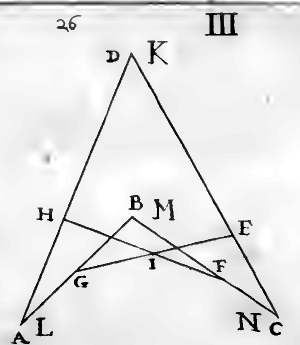
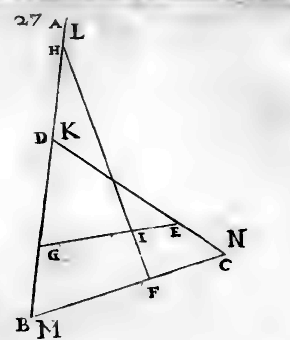

Propositio XXII · Theorema XI¶





PROP. XXII. THEOR. XI.
Duae lineae AB, BC comprehendentes angulum B secent alias duas lineas AD, DC comprehendentes angulum D, secent, inquam, in punctis A C, sintque lineae CB, BA, AD, DC ita diuisae in punctis F G H E, vt ratio DE ad EC componatur ex rationibus BF ad FC, AG ad GB, & DH ad HA. Dico iunctas HF, GE se inuicem secare, puta in I, ideoque in vno plano existere: hoc autem vt constet, suspendere oportebit ex punctis A B C D grauia L M N K, ita vt GI ad IE sit vt duo grauia KN ad duo LM; & HI ad IF, vt duo MN ad duo LK, quod sic praestabimus.
(tab. 3. fig. 25, 26, 27) Fiat vt BF ad FC, ita graue N ad M; vt AG ad GB, ita M ad L; & vt DH ad HA, ita L ad K. Pondus N ad K componitur ex rationibus grauium N ad M ad L ad K, videlicet ex rationibus rectarum BF ad FC, AG ad GB, & DH ad HA; ex ijsdem verò componitur DE ad EC; ergo vt DE ad EC, ita N ad K. Cum igitur E sit centrum librae CD, hoc est grauium N K, & G centrum grauium LM, erit in libra GE centrum omnium grauium KN LM; eademque ratione cum H sit centrum grauium LK, & F sit centrum grauium MN, erit item in libra HF centrum omnium grauium LK MN in eadem priori positione, quod cum vnicum sit,
f. 0048 · p. 31necesse est, vt librae, seu lineae GE, HF se inuicem secent, vt in I, eritque hoc centrum vtriusque librae, & propterea vt HI ad IF, ita duo grauia MN ad duo LK; similiter vt recta GI ad IE, ita duo grauia KN ad duo grauia LK, quod &c.